창호종합기계 1헤드 유압 펀칭기에서는 ① 유압 실린더가 아래로 밀고, ② 펀치(누르는 날)와 금형(펀치와 받침을 한 벌로 묶은 것)이 자재를 끊어 냅니다. ③ 틀은 실린더를 위에 얹고 자재를 아래에서 받칩니다. ④ 유압 호스는 유압 장치(모터·압력 조절기·기름통)에서 만든 압력을 실린더로 보냅니다. ⑤ 압력계는 실린더 쪽 유압을 보여 주고, ⑥ 발판 스위치를 밟으면 펀칭합니다.
이 부분들은 한꺼번에 나온 것이 아닙니다. 눌러서 끊어 내는 펀치와 다이 한 쌍, 나사로 누르는 프레스, 액체로 힘을 키우는 원리, 물이 새지 않게 막는 방법, 압력을 한 곳에서 만들어 관으로 보내는 방법, 금형을 바꿔 끼우는 방식이 하나씩 나왔습니다. 아래 칸들은 사진 속 부분이 어디서 왔는지 시대 순서로 따라갑니다. ⑤ 압력계와 ⑥ 발판 스위치는 이 글에서 유래를 따로 적지 않았습니다.
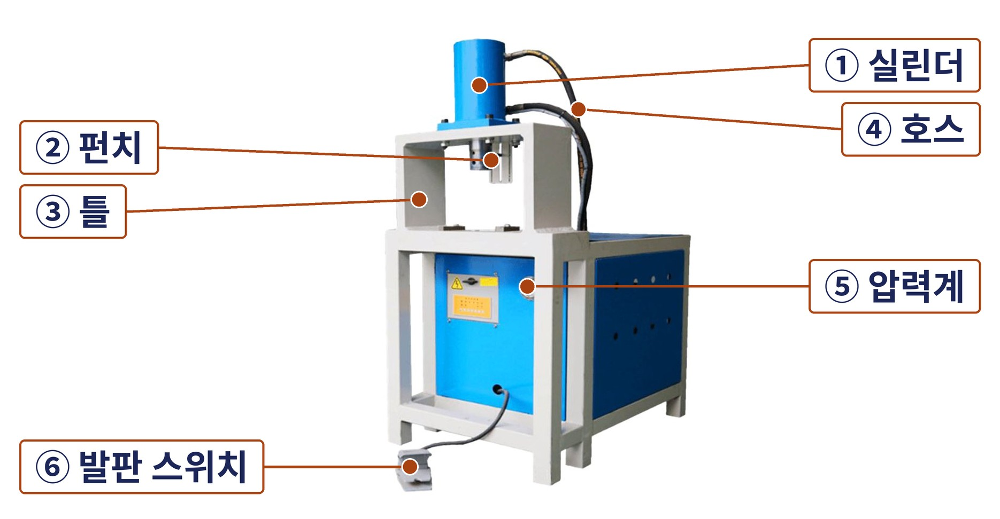
| 지금 기계의 부분 | 처음 나온 곳 | 이 글의 칸 |
|---|---|---|
| ① 유압 실린더 — 액체로 누르는 힘을 키우는 원리 | 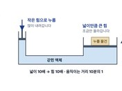 1653년 프랑스 파스칼이 정리한 원리 | 파스칼의 원리 |
| ① 실린더와 피스톤 — 물이 새지 않게 막은 프레스 | 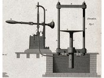 1795년 영국 브라마의 수압 프레스 | 브라마의 수압 프레스 |
| ① 유압 실린더의 큰 힘 | 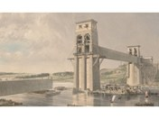 19세기 중반 다리·배 공사에 쓴 수압 프레스 | 다리를 들어 올린 프레스 |
| ② 펀치와 다이 — 눌러서 끊어 내는 한 쌍 | 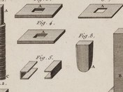 금화를 찍던 위·아래 틀과 나사 프레스 | 망치와 나사 프레스 |
| ③ 펀치와 받침을 잡는 틀 · ② 금형이 자재를 잡고 뚫기 | 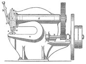 19세기 중반 영국의 리벳 구멍 펀칭기 | 리벳 구멍 펀칭기 |
| ④ 유압 호스 · 유압 장치 — 압력을 만들어 관으로 보내기 | 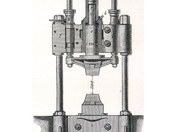 1850년 무렵 영국 암스트롱의 축압기 | 축압기와 단조 프레스 |
| ② 펀칭 · 자르기 · 따내기를 한 대에서 | 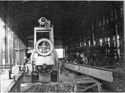 19세기 말 철골 공장의 겸용 기계 | 철골 공장의 펀칭기 |
| ② 금형을 바꿔 끼우기 | 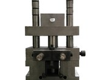 20세기 터릿 펀칭기 | 금형을 바꿔 끼우는 펀칭기 |
펀칭은 위에서 펀치(누르는 날)가 판을 누르고, 아래에서 다이(구멍 뚫린 받침)가 구멍 둘레를 받쳐 판을 끊어 내는 가공입니다. 드릴처럼 돌려 깎는 것이 아니라 눌러서 잘라 냅니다. 뚫려 나온 동그란 조각은 다이 구멍 아래로 떨어집니다.
펀치와 다이 사이에는 아주 작은 틈을 둡니다. 판이 두껍거나 단단할수록 이 틈을 조금 넓힙니다. 펀치와 다이 한 벌을 「금형」이라고 부릅니다.
지금 기계에서는 — ② 펀치와 다이가 이 일을 합니다. 금형이 자재를 잡은 상태로 눌러 끊기 때문에 반복 작업에서도 정밀도가 높습니다.
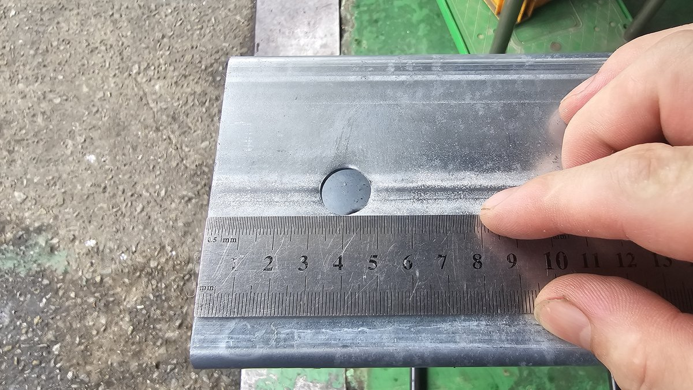
▶ 자재 모양에 따라 금형이 달라지는 이유는 영상으로 확인하실 수 있습니다. 「판재·각파이프·원형파이프, 금형이 다 다른 이유」 영상 보기 — 창호종합기계 유튜브
그전에는 펀치와 다이를 금화를 찍는 데 썼습니다. 아래 다이 위에 쇳조각을 놓고, 위 펀치를 망치로 내리쳐 무늬를 찍었습니다.
바뀐 것은 누르는 방법입니다. 나사 프레스는 굵은 나사를 돌려 위 틀을 내려 아래 틀을 누르는 기계로, 로마 시대에 포도와 올리브를 짜는 데 쓰였고 15세기 구텐베르크 인쇄기에도 쓰였습니다. 펀치와 다이를 끼우면 금속판에 구멍을 뚫을 수도 있었습니다.
손잡이 양 끝에 무거운 쇠뭉치를 단 나사 프레스를 「플라이 프레스」라고 부릅니다. 손잡이를 힘껏 돌릴 때 쇠뭉치가 돌아가는 힘까지 더해져 세게 누를 수 있었습니다. 파리와 영국의 조폐국(돈을 만드는 곳)은 17세기 중반부터 이 나사 프레스로 금화를 찍었고, 19세기 말 수압 프레스로 바뀔 때까지 오래 썼습니다.
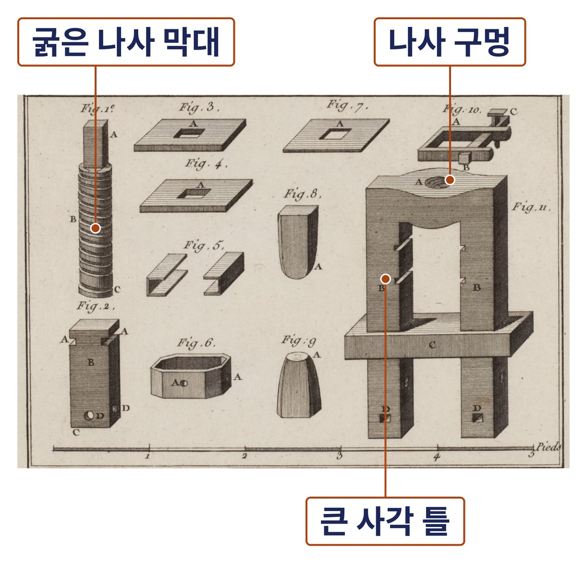
지금 기계에서는 — ② 펀치와 다이 한 쌍은 이때와 같은 생각입니다. 달라진 것은 누르는 힘을 내는 쪽으로, 사람이 돌리는 나사 대신 ① 유압 실린더가 누릅니다.
그전에는 누르는 힘을 키우려면 앞 칸의 나사 프레스처럼 굵은 나사를 힘껏 돌려야 했습니다.
바뀐 것은 액체를 쓰는 원리입니다. 수압 프레스(물의 압력으로 누르는 프레스)의 바탕은 프랑스의 블레즈 파스칼이 1653년에 정리한 원리로, 그릇에 갇힌 액체의 한 곳을 누르면 그 압력이 액체 안의 모든 곳에 똑같이 전해진다는 내용입니다. 이 글은 파스칼이 세상을 떠난 뒤인 1663년에 책으로 나왔습니다.
이 원리를 쓰면 작은 힘으로 큰 힘을 낼 수 있습니다. 피스톤(통 안에서 액체를 밀어 누르는 마개)을 좁은 것과 넓은 것 두 개 준비해 액체로 이어 두고 좁은 쪽을 누르면, 넓은 쪽에는 넓이가 넓은 만큼 큰 힘이 걸립니다. 넓이가 10배면 힘도 10배입니다. 대신 넓은 쪽은 그만큼 조금만 움직이므로, 힘을 공짜로 얻는 것은 아닙니다.
지금 기계에서는 — ① 유압 실린더가 이 원리를 사용합니다. 유압 장치가 만든 기름의 압력이 실린더 속 피스톤을 밀면, 피스톤의 넓이만큼 큰 힘이 펀치에 걸립니다.
그전에는 파스칼의 원리를 알아도 쓰기가 어려웠습니다. 굵은 피스톤이 실린더(피스톤이 들어 있는 통) 밖으로 밀려 나오는 틈으로 높은 압력의 물이 새기 때문입니다.
바뀐 것은 쓸 수 있는 수압 프레스가 나온 것입니다. 자물쇠와 수세식 변기로 이름난 영국의 발명가 조지프 브라마가 1795년 수압 프레스로 특허를 받았습니다. 그래서 수압 프레스를 「브라마 프레스」라고도 부릅니다.
물이 새지 않게 막는 일은 브라마 공장의 공장장이던 헨리 모즐리가, 물의 압력 자체가 가죽 고리를 피스톤에 꽉 붙게 만드는 「스스로 조여지는 가죽 고리」를 고안했다고 전해집니다. 이 가죽 밀봉을 브라마가 만들었다고 적은 자료도 있어, 누가 고안했는지는 자료마다 다릅니다.
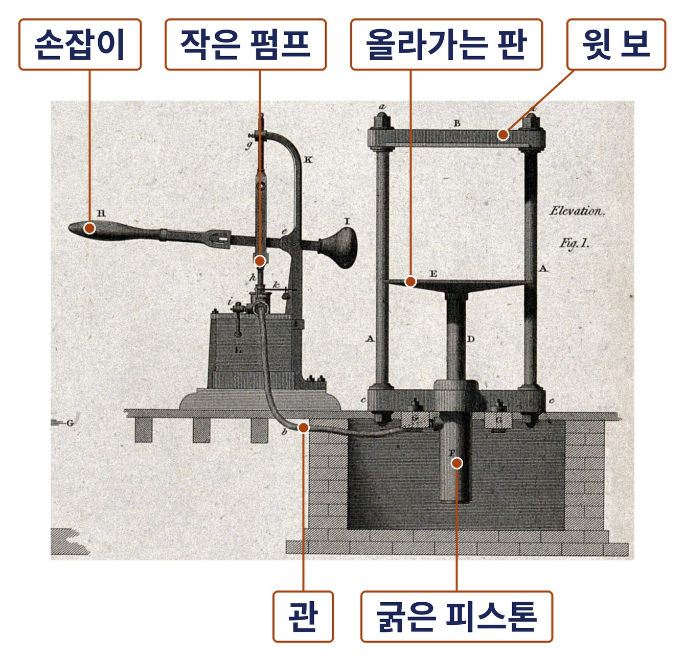
모즐리는 기계 이야기 2편에서 나사 깎는 선반을, 4편에서 기준 정반을 만든 그 사람입니다. 모즐리는 1790년대 말 브라마 공장을 나와 런던에 자기 공장을 차렸습니다.
지금 기계에서는 — ① 유압 실린더도 같은 구조입니다. 실린더 안에서 피스톤이 움직이고, 높은 압력의 액체가 새지 않게 막아야 합니다. 물 대신 녹이 슬지 않고 미끄러운 작동유(기름)를 사용합니다.
그전에는 수압 프레스를 주로 짐 꾸리기, 곧 짐을 눌러 작게 묶는 일에 가장 많이 사용했습니다. 쇠막대를 자르거나 나무를 뿌리째 뽑는 데도 썼습니다.
바뀐 것은 쓰이는 크기입니다. 큰 공사에도 쓰였습니다. 웨일스 메나이 해협의 브리타니아 다리(1849~1850)는 강가에서 조립한, 다리 몸체가 될 거대한 쇠관을 배에 띄워 옮긴 뒤, 탑 위에 설치한 수압 프레스로 들어 올렸습니다. 관 하나를 약 9m(30피트) 올렸을 때 프레스 하나가 터져 관이 약 18cm(7인치) 떨어졌고, 새 실린더를 만들어 마저 올렸습니다. 큰 배 그레이트이스턴호를 물에 띄울 때(진수)도 수압 프레스를 썼습니다.
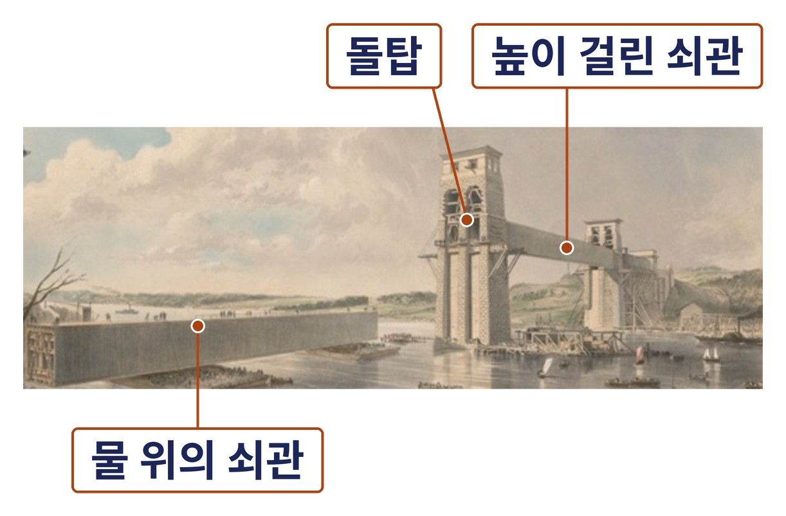
지금 기계에서는 — ① 유압 실린더의 큰 힘은 물건을 들어 올리는 데가 아니라, 펀치를 눌러 판을 끊는 데 사용합니다.
그전에는 증기 보일러와 물탱크, 쇠로 만든 배의 쇠판 이음에 리벳(달군 쇠못)을 박을 구멍이 많이 필요했고, 이 구멍은 손으로 금을 긋고 뚫기도 했습니다. 그래서 이 시대 펀칭기의 대표적인 일이 리벳 구멍 뚫기였습니다.
바뀐 것은 펀칭을 기계 몸체에 맡긴 것입니다. 펀칭기는 지렛대나 위아래로 움직이는 틀 끝에 펀치를 달고, 몸체에 다이를 나사 네 개로 고정한 모양이었습니다. 곡선 모양은 구멍을 조금씩 겹쳐 뚫어 끊어 냈습니다.
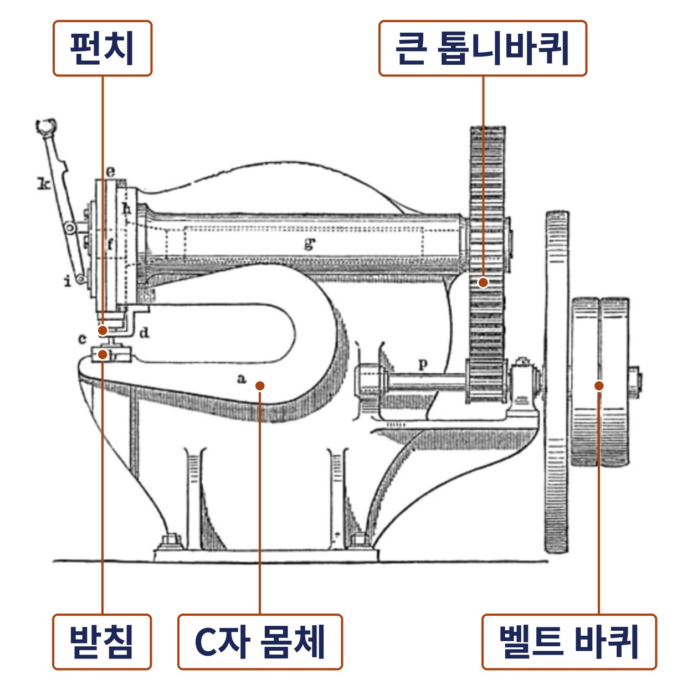
모즐리 회사는 판을 긴 직선 틀에 고정해, 한 번 뚫을 때마다 판을 같은 간격만큼 밀어 주는 장치를 붙였습니다. 리벳 구멍 간격이 고르게 나오도록 한 것입니다.
물의 압력으로 누르는 펀칭기도 있었습니다. 영국 볼턴의 힉은 실린더 네 개를 묶은 수압 프레스로, 두께 약 8.9cm(3½인치) 쇠판에서 지름 약 20cm(8인치) 원판을 뚫어 냈습니다. 누르는 힘이 약 2,000톤이었다고 합니다. 뚫려 나온 조각은 원판보다 조금 얇고 옆으로 약간 퍼져 있었습니다.
1847년 웨일스 콘위 철도교 공사에서는 손으로 금을 긋고 뚫은 리벳 구멍이 서로 맞지 않아 문제가 됐습니다. 이때 리처드 로버츠(1789~1864)가 직물 기계에 쓰던 구멍 뚫린 카드(자카드 방식)를 펀칭기에 붙였습니다. 카드에 뚫린 구멍대로 정해진 간격에 구멍을 뚫으므로, 판에 금을 긋지 않아도 됐습니다. 이렇게 뚫은 판은 1,000장 가운데 아무 두 장이나 골라도 고쳐 뚫지 않고 맞았다고 합니다. 같은 기계를 브리타니아 다리 공사에도 썼습니다. 로버츠는 모즐리 공장 출신으로, 4편에서 평삭기를 만든 사람으로 소개했습니다.
1851년 런던 만국박람회장인 수정궁을 지을 때도 펀칭기와 전단기(쇠를 자르는 기계)를 썼습니다.
지금 기계에서는 — ③ 틀도 같은 구실을 합니다. 실린더와 펀치를 위에 달고, 자재를 아래에서 받칩니다. ② 금형이 자재를 잡은 채로 같은 자리에 뚫는 점은, 구멍 간격을 고르게 맞추려던 이때의 장치와 비슷한 목적입니다.
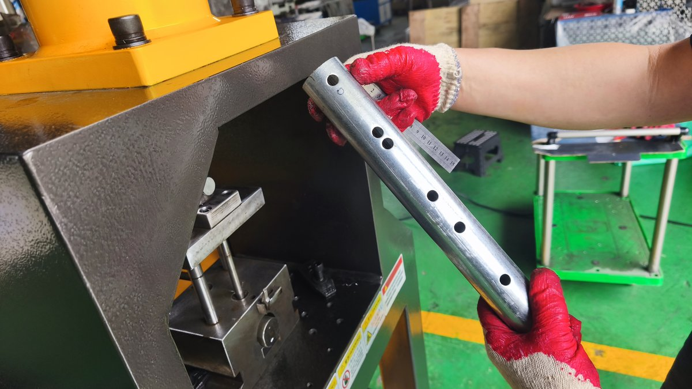
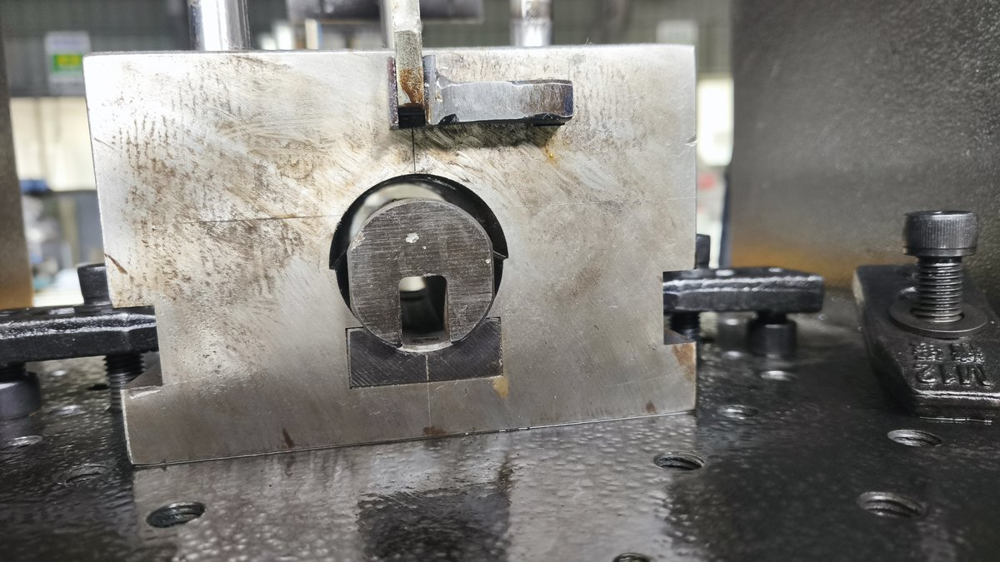
그전에는 수압을 쓰려면 큰 저수지가 있어야 했습니다.
바뀐 것은 압력을 따로 담아 두게 된 것입니다. 영국의 윌리엄 암스트롱(1810~1900)은 물의 압력으로 움직이는 기중기를 만들었고, 1850년 무렵 「축압기」를 고안했습니다. 축압기는 무거운 추로 물을 눌러 압력을 담아 두는 장치입니다. 큰 저수지가 없어도 공장 어디서나 수압을 쓸 수 있게 됐습니다. 암스트롱은 브라마와 함께 수압 공학의 두 아버지로 불리기도 합니다.
수압 프레스는 단조(달군 쇠를 눌러 모양을 만드는 일)에도 쓰이기 시작했습니다. 1861년 오스트리아의 존 해즈웰이 기관차 부품을 단조하는 800톤 수압 프레스로 특허를 냈습니다. 1860년대에는 휘트워스가 녹은 강철을 수압으로 눌러 굳히는 프레스를 세웠습니다. 휘트워스는 2편에서 55° 나사산 규격을, 4편에서 정반 만드는 법을 정리한 사람입니다. 망치로 내리치는 대신 천천히 눌러 모양을 만드는 수압 프레스는, 결국 쇠 단조에서 증기 망치(증기의 힘으로 내리치는 큰 망치)를 대신하게 됐습니다.
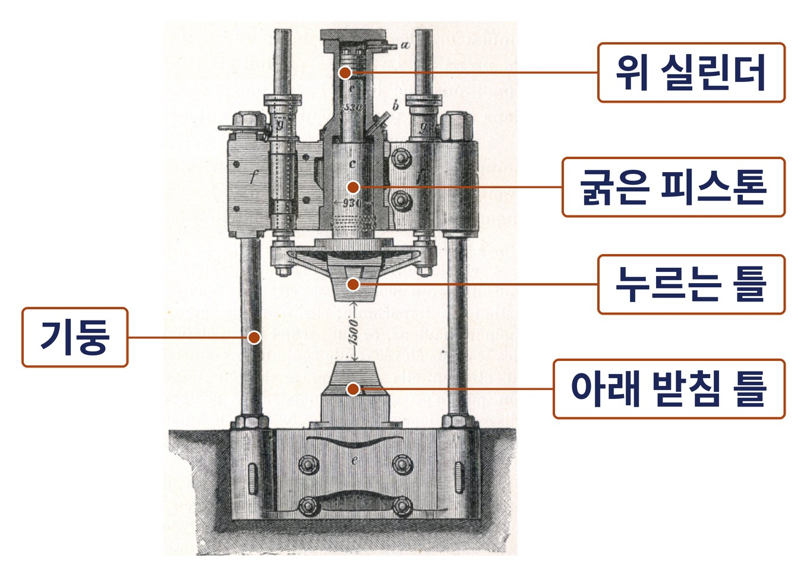
지금 기계에서는 — ④ 유압 호스와 유압 장치가 이 흐름을 잇습니다. 압력을 만드는 장치(모터·압력 조절기·기름통)가 기계 몸체 안에 있고, 호스로 ① 실린더에 압력을 보냅니다. 압력을 한 곳에서 만들어 관으로 보내 쓰는 생각은 같습니다.
그전에는 구멍 뚫기와 자르기를 하는 기계가 따로 쓰였습니다. 수정궁 공사에서도 펀칭기와 전단기를 각각 썼습니다.
바뀐 것은 한 대로 여러 일을 하게 된 것입니다. 19세기 말 건물과 다리에 쇠와 강철을 많이 쓰면서, 두께 약 2.5cm 판을 자르고 리벳 구멍을 뚫는 큰 기계가 나왔습니다. 한 대로 펀칭(구멍 뚫기), 전단(자르기), 노칭(모서리 따내기)을 모두 하는 기계로, 조선소와 철골 공장에서 썼습니다.
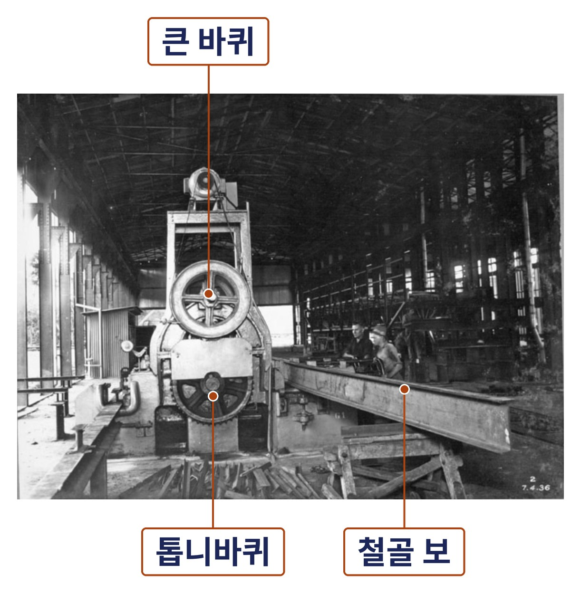
지금 기계에서는 — 지금은 한 대에 모두 맡기지 않고 일에 맞는 기종으로 나누어 사용하기도 합니다. 창호종합기계 유압 펀칭기·프레스·노칭기 가운데도 구멍 뚫기, 모서리 따내기, 자르기를 나누어 하는 기종이 있습니다. 일에 맞는 기종을 고르면 됩니다.
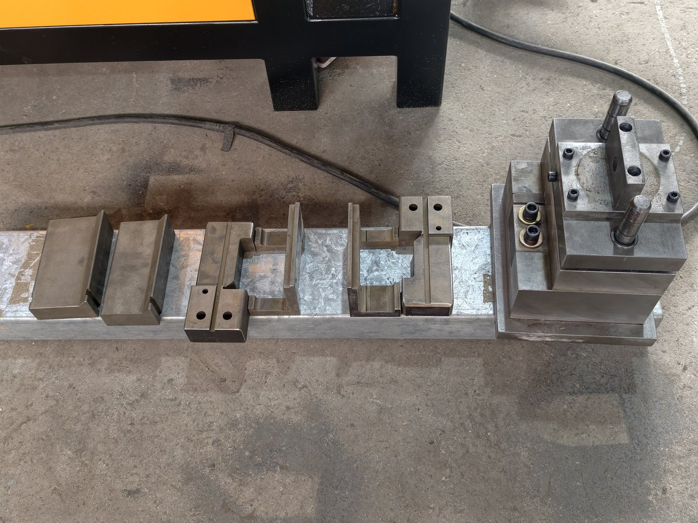
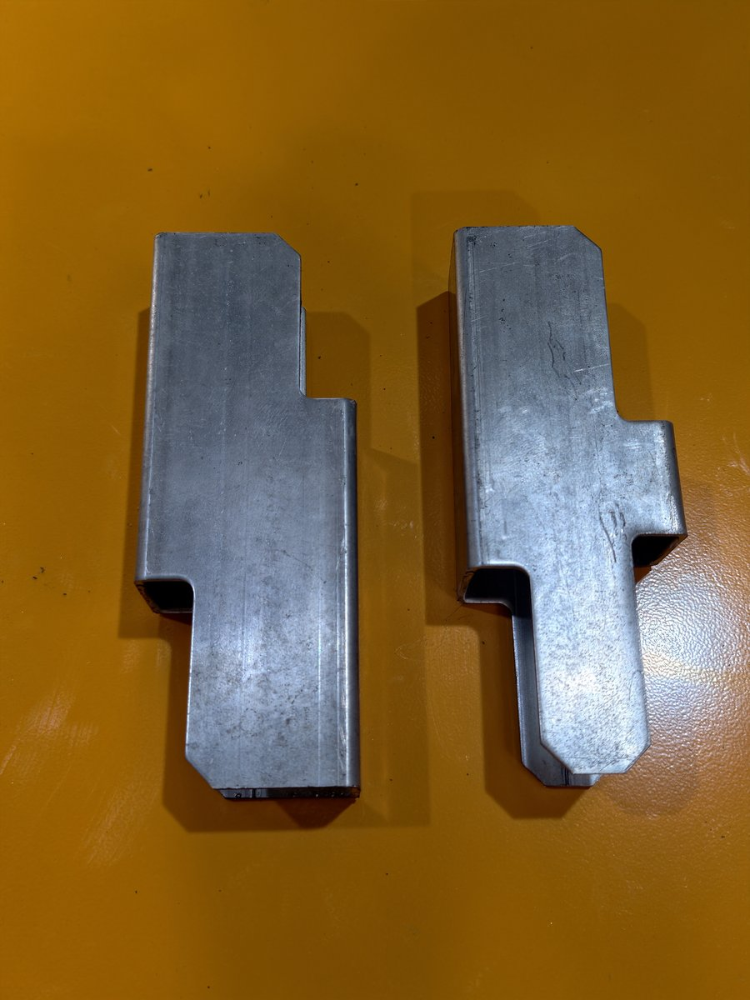
▶ 사각 파이프 끝을 한 번에 따내는 모습은 영상으로 확인하실 수 있습니다. 「75x45x2.9t 사각 파이프 끝단, 30톤 유압으로 한 번에 노칭」 영상 보기 — 창호종합기계 유튜브
그전에는 기계 하나에 금형 하나를 달아 한 가지 구멍을 뚫었습니다.
바뀐 것은 금형을 갈아 쓰는 방식입니다. 20세기에는 여러 금형을 둥근 판(터릿)에 꽂아 두고 돌려 가며 쓰는 판금(얇은 금속판) 펀칭기가 나왔습니다. 1950년대 미국에서는 숫자로 입력한 대로 판을 옮기며 구멍을 뚫는 펀칭기(NC 펀칭기, 숫자 제어 펀칭기)가 나왔습니다.
지금의 유압 펀칭기도 원리는 브라마의 수압 프레스와 같습니다. 펀치와 다이를 한 벌로 묶은 금형을 바꿔 끼우면 동그란 구멍, 긴 구멍, 모서리 따내기까지 한 기계로 할 수 있습니다.
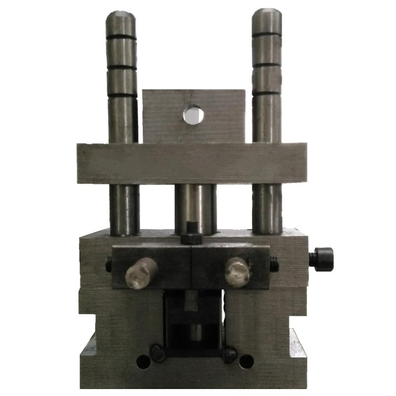
지금 기계에서는 — ② 금형을 바꿔 끼워 구멍 모양을 고릅니다. 같은 계열 펀칭기와 금형 규격이 같아 금형을 함께 쓸 수 있어, 가공할 구멍 모양이 늘어도 기계를 추가로 구매하실 필요가 없습니다.
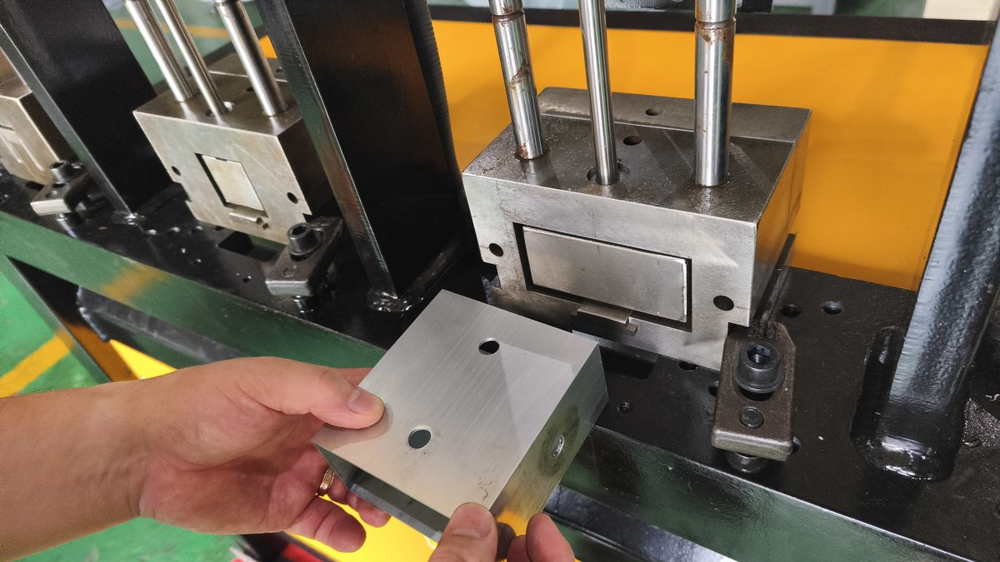
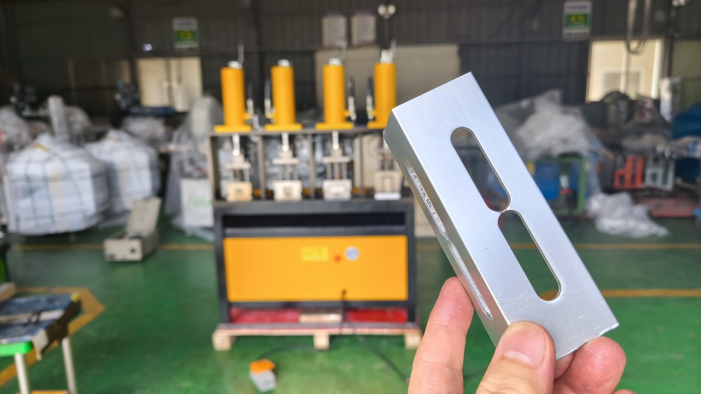
창호종합기계는 금속 자재에 구멍을 뚫고, 모서리를 따내고, 자르는 유압 펀칭기·프레스·노칭기 24종을 공급합니다. 기본형인 1헤드(누르는 머리가 하나인) 유압 펀칭기는 유압 실린더 하나로 펀치를 누르는 기계로, 같은 규격의 금형을 바꿔 끼워 여러 모양의 구멍을 뚫습니다. 사용하실 자재 규격에 맞춰 금형을 제작·보완하고, 도입 전에 실제 자재로 시험 가공해 구멍 위치를 확인해 드립니다.
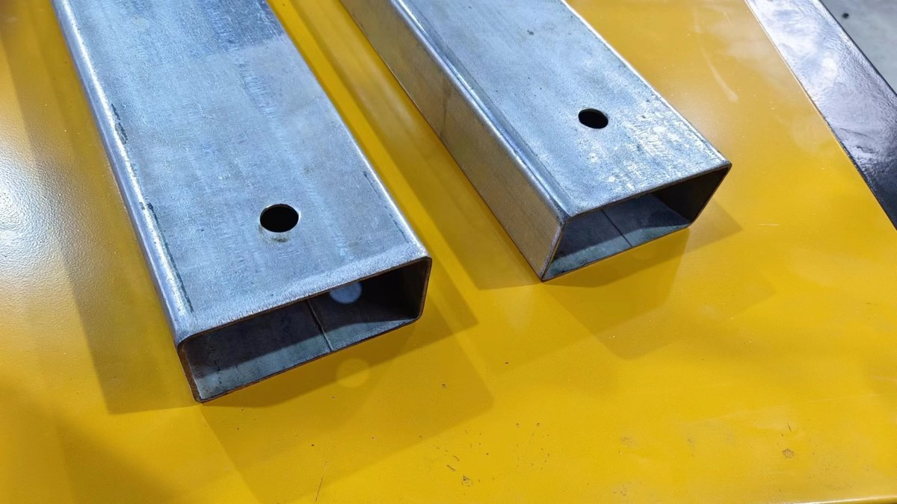
알루미늄 창호 프로파일과 패널을 가공하는 펀칭기·물구멍 개공기·가공 금형, PVC 창호 프로파일에 물구멍(빗물이 빠지는 구멍)을 내는 물구멍 펀칭기와 금형도 함께 공급합니다. 가공할 자재와 구멍 도면을 알려 주시면 맞는 기계와 금형을 제안해 드립니다.
가공할 자재 규격과 구멍 도면을 알려 주시면 맞는 기계와 금형 구성을 제안해 드립니다.